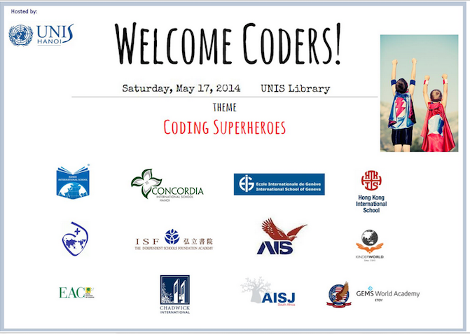

14 schools and 200+ students from Brazil to Switzerland to Asia got together for a big live google hangout to play with Scratch last Saturday (World Scratch Day).
It was the inaugural Global Codeathon for Primary Students. See website if you're interested in joining us next year: http://globalcodeathon.unishanoi.org/
I have storified all the Tweets from the Codeathon here: https://storify.com/ChezVivian/inaugural-globalcodeathon You'll have to click through the pages to get to the heart of the event. The first pages are about how the idea was conceived and the planning done. It's really a story of the power of our Twitter connections.
During the Codeathon, students were challenged to remix or to create a flappy bird game using Scratch, incorporating the theme of Superheroes. Instructions were given to us via live google hangout. There was a SLAM where 2 students from each school showed each other what they came up with. We also took time to look at projects to give thoughtful and positive comments.
The inventor of the Flappy Bird game (@dongatory) judged Advanced entries submitted a week earlier on the theme of "Superheroes". See scoring criteria: http://globalcodeathon.unishanoi.org/advanced-competition/
See 1st place winner Scratch project: http://scratch.mit.edu/projects/22113673/
2nd place: http://scratch.mit.edu/projects/21625054/
3rd place: http://scratch.mit.edu/projects/21664998/
Hope you will think about joining the Codeathon next year! Follow @globalcodeathon on Twitter for updates.